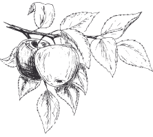

Historia
Tradición familiar. La experiencia de tres generaciones y el mismo espíritu de superación para ofrecer la mejor sidra natural
El Llagar Online fué fundado por mis abuelos paternos, D. Alfredo García Menéndez y Dña. Margarita Suárez Rodríguez en el año 1940.
Dedicados al transporte de viajeros haciendo la ruta Navia-Gijón-Navia en un autocar de su propiedad, se quedan sin trabajo al ser confiscado dicho vehículo durante la guerra. Transcurridos 2 años el autocar aparece en Salamanca completamente inservible por lo que ellos deciden venderlo al desguace por unas 11.500 pesetas. Con este dinero y algún ahorro construyen el edificio principal para hacer el llagar.
Comienza aquí su pequeña producción y venta de sidra natural, que años más tarde continúa con el negocio su yerno (mi padre), D. Julián Iglesias Villanueva, haciendo cada año pequeños aumentos en nuevos toneles y maquinaria.
En 1982 fallece mi padre mientras me encontraba haciendo el servicio militar. Con el apoyo de mi madre y mis hermanos decidí continuar con su labor y a base de muchos esfuerzos, económicos y sentimentales, fuí creando el llagar que hasta ahora estaba situado en el barrio de San Blas, en Navia, famoso por la parrilla y las fiestas de Santa Eulalia que allí se organizaban.
Al no disponer de terreno alrededor de la finca que permitiera realizar ampliaciones en el mismo, nos planteamos hacer otro llagar nuevo en una finca adquirida no muy lejos de ésta, en el mismo municipio de Navia. Unas nuevas instalaciones que esperamos sean de vuestro agrado, donde podréis visitar nuestro llagar y degustar nuestra sidra natural